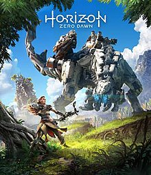
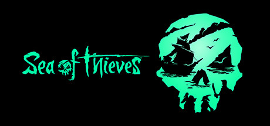
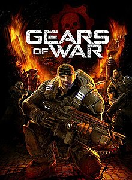
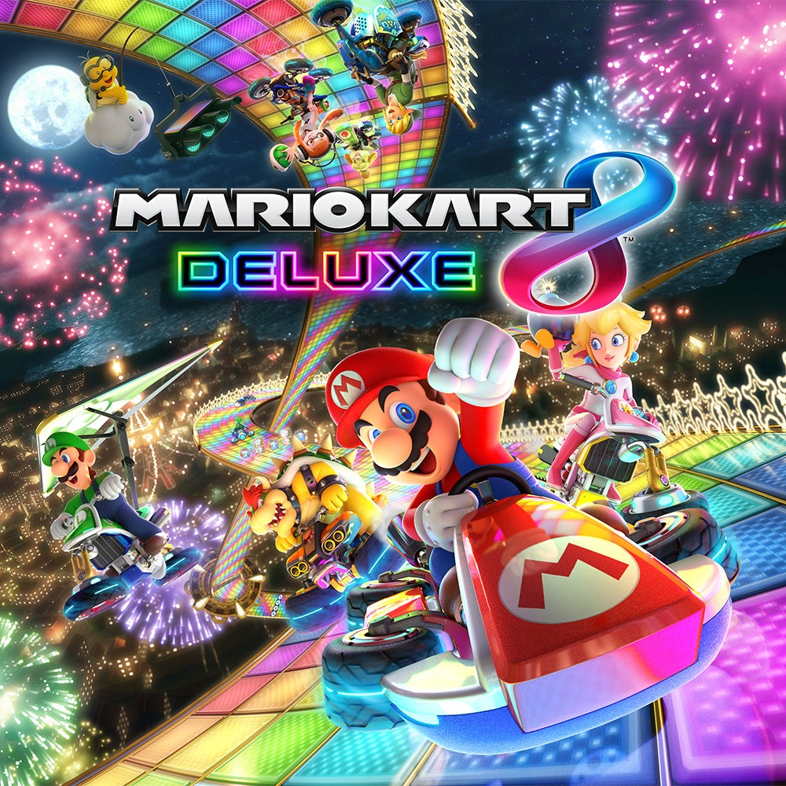

Exclusive Games
Exclusive games are only sold to be playesd on a specific console. The other consoles cannot play these games.
The majority of the time, these games are what are known as Triple A games, meaning they are made by a large company that make bigger, more ambitious games.
These exclusives become staples of that console, casuing players to buy a specific console just to play those games.
Companies and their Consoles
- PlayStation
- Console owned by Sony
- X-Box
- Console owned by Microsoft
- Nintendo Switch
- Console owned by Nintendo
PlayStation Exclusives
PlayStation is known for its amazing exclusives. These games stand out and are well recognized. Below you will find a couple of them:
- God of War

- God of War is a game where you play as Kratos, the God of War. His mission is to take his wifes ashes to the tallest peak in all the realms.
This adventure leads Atreus(his son) and himself, to different realms in which they must fight to survive.
- Ghost of Tsushima

- Ghost of Tsushima has you play as Jin Sakai, the leader of a samurai clan. He has to defend his home from the invading Mongols.
He is placed in a difficult situation where he must choose to defend his home or follow the samurai traditions of honor. The game has amzing story telling and awesome fights.
- Horizon Zero Dawn

- You play as Aloy, a young woman tasked with saving the world from threats primitave humans aren't even aware of.
Humainty is living in a primitive world, though there are numerous kinds of machines resembling real world animals. Aloy finds a device that begins to explain to her the history of past humans that had advanced technology.
The hard truthy of what happened to humans is one man's fault Ted Faro. He caused the extinction of all life on Earth due to an army of machines for military purposes. That threat is trying to reactivate itself and she must stop it.
XBox Exclusives
XBox exclusives are well known to everyone who knows about videogames. The following are some of the most well known:
- Halo

- These games take place in the future. But before then, humanity has spread through the galaxy and was nearly destroyed by an alien species called The Flood along with a war of other aliens.
Humanity loses and is devolved by enemy alines. Later on all life in the galaxy is reset and clones of every species are sent to suitable plaents including our own. In the future The Covenant, an army of various aliens attacks human planets.
The Spartans, a group of genetically enhanced humans are humanities weapon against The Covenant.
- Sea of Thieves

- This is an open world game exclusive to XBox. Where you can play as a pirate that you can fully customize. You can find trasure and do a vast number of missions. You can also get your own ship where you can also customize to have different weapon formations.
This game is better with freinds since you can do harder missions together and coordinate.
- Gears of War

- Gears of War is a game series in which a group of soldiers called Gears are tasked with rescuing a fellow Gear. Then they are to find a bomb to destroy their enemies which are a race of aliens called the Locusts.\
They need a bomb to destroy the Locusts base called The Hollow, there they find the necassary device to build said bomb. Eventually they do blow up the base. The games story continues in other entries of the game.
Nintendo Exclusives
All of Nintendos games can only be played on their consoles. XBox and PlayStation have certain games available for PC unlike Nintendo. Their games are well known having iconic charatcers like MArio and Samus. Here are some of their best games:
- Mario Kart 8

- Mario Kart is a racing game where players can choose their favorite characters as their racers and can try and throw objects at others toi get the upperhand. You can play with freinds and play on different race tracks. Every race track is unique and has different obstacles or shortcuts you can take if you know wehre to find them.
The player can unlock new karts and wheels in order to adjust the stats of their kart.
- Super Smash Bros Ultimate

- This game is all about fighting. You can choose from many characters from different videogames. Each character has unique moves where players have to properly use to defeat the other players.
Players can make their own custom map where they can fight with others. There is also a campaign where players will eventually have to fight other characters to unlcok them, making them stronger.
- Animal Crossing New Horizons

- This game series has always been ell recieved. Now a new generation can enjoy this game where the player moves to an island along with other animal like characters.
You can do whatever you like with the island, you can build diffferent structures, build homes for your villagers and even decorate however you please.
This is a relatively easy game to grasp and is relaxing since there is no real danger of anything wrong happening within the game.